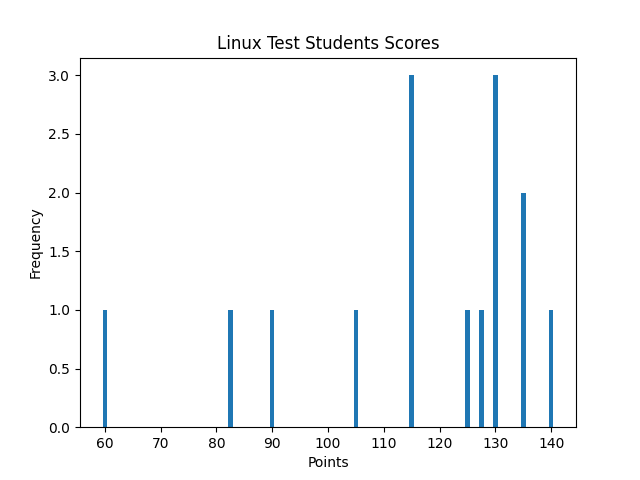
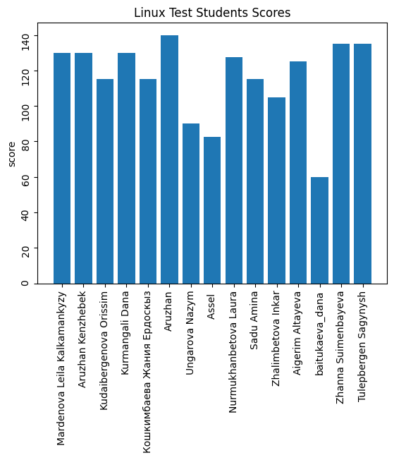

| Index | Student | Score |
|---|---|---|
| 1 | Mardenova Leila Kalkamankyzy | 130.0 |
| 2 | Aruzhan Kenzhebek | 130.0 |
| 3 | Kudaibergenova Orissim | 115.0 |
| 4 | Kurmangali Dana | 130.0 |
| 5 | Кошкимбаева Жания Ердоскыз | 115.0 |
| 6 | Aruzhan | 140.0 |
| 7 | Ungarova Nazym | 90.0 |
| 8 | Assel | 82.5 |
| 9 | Nurmukhanbetova Laura | 127.5 |
| 10 | Sadu Amina | 115.0 |
| 11 | Zhalimbetova Inkar | 105.0 |
| 12 | Aigerim Altayeva | 125.0 |
| 13 | baitukaeva_dana | 60.0 |
| 14 | Zhanna Suimenbayeva | 135.0 |
| 15 | Tulepbergen Sagynysh | 135.0 |
Total Participants: 15
Heighest Score: 140.0
Lowest Score: 60.0
Avarege Score: 115.66666666666667
Standard Variance: 22.60820542150465
According to the comprehensive analysis of the various data above, it is found that：
According to the large variance of student achievements, it can be found that students have different levels of cognition due to factors such as age and academic qualifications. Therefore, for certain more difficult courses, students can be divided into different groups according to the learning situation,give certain groups more help and guidance.


NOTE FOR STUDENTS: * You can download your own report from the report folder.*
Last updated on 2020-04-18 19:58:57.737392.
Report Auto-generated by reporter.py Done with ♥ by Yaakov Azat.